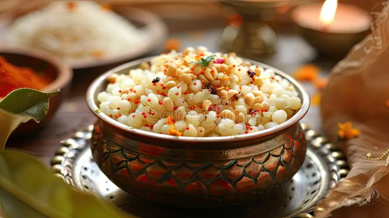

Sabudana Khichdi
Made with tapioca pearls, peanuts, and mild spices – perfect for fasting days.
📠Aundh
Egg Bhurji
Spicy scrambled eggs served with buttered pav – a street-style classic.
📠Koregaon ParkStart your day the Puneri way! Pune's mornings are filled with flavorful breakfast options like piping hot Poha, crispy Kanda Bhaji, and buttery Pav Bhaji. Explore the must-try breakfast dishes served across the city.
Made with tapioca pearls, peanuts, and mild spices – perfect for fasting days.
📠Aundh
Spicy scrambled eggs served with buttered pav – a street-style classic.
📠Koregaon Park
From spicy Misal to buttery Pav Bhaji, start your day here like a true Punekar.


"Misal from Nal Stop hits different on Sunday mornings!" – Sameer R.
"Upma at Erandwane is my go-to every morning." – Neha P.
"Best Poha in the city at Kothrud!" – Rahul K.